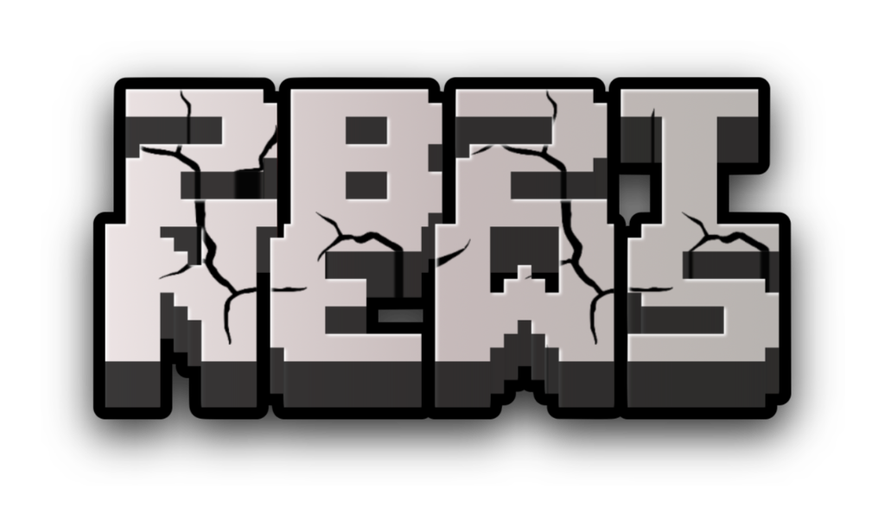
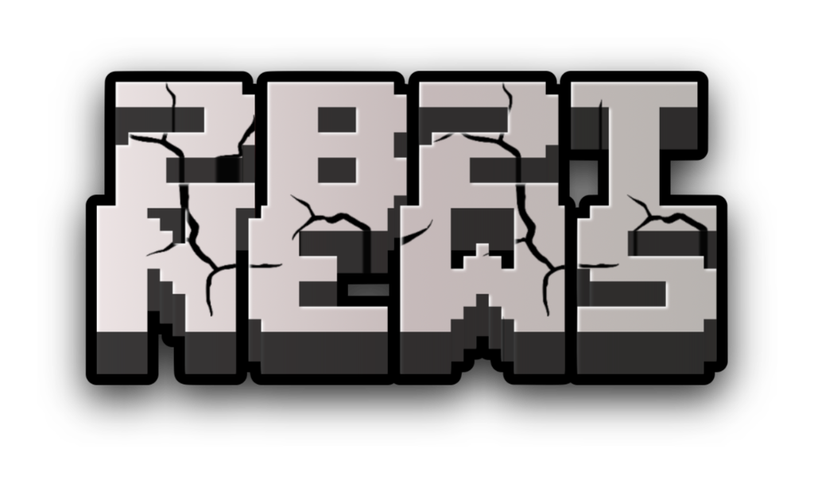

SpawnMasons — это легендарный клан на сервере 2B2T, известный своей скрытностью и умением использовать новейшие эксплойты. Их деятельность оказала огромное влияние на экономику и жизнь сервера.
Клан прославился не только грабежами, но и масштабными рейдами,
которые они проводят с использованием сложных инструментов и
автоматизации. Благодаря эксплойту
Randar
Масоны стали владельцами миллионов редких ресурсов и укрепили
свою власть.
Несмотря на закрытый характер организации, SpawnMasons продолжают адаптироваться к изменениям на сервере и внедрять новые стратегии для поддержания своей доминирующей позиции.
Сегодня клан также участвует в социальных проектах, поддерживая других игроков и предоставляя ресурсы для развития.